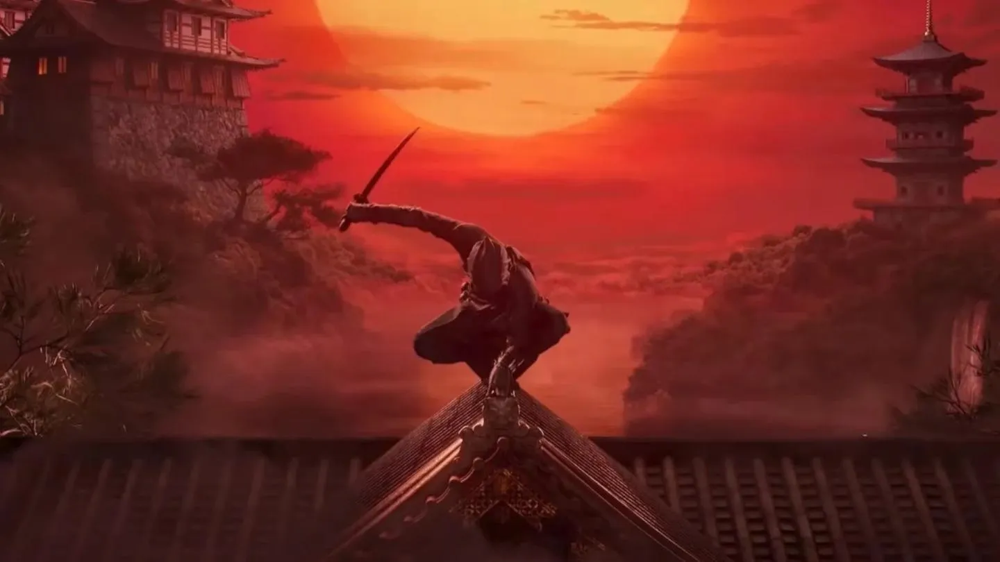
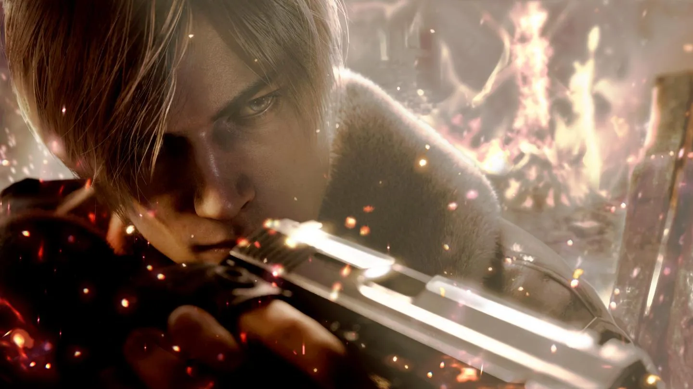
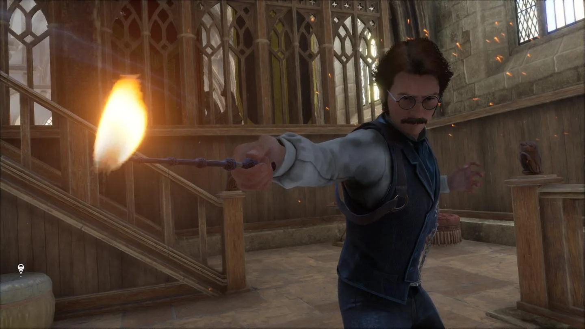
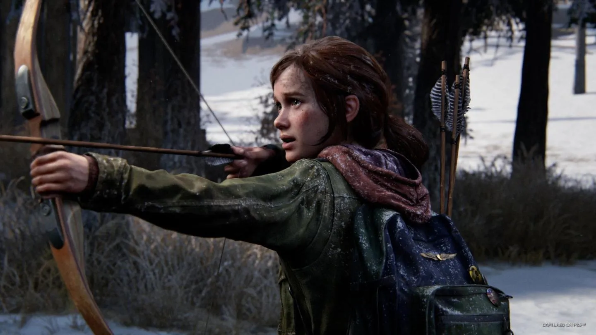

Nintendo Entertainment System
El Nintendo Entertainment System (NES) es una videoconsola de 8 bits desarrollada y fabricada por Nintendo. Fue lanzada en Japón el 15 de julio de 1983, en Norteamérica el 18 de octubre de 1985 y en Europa el 2 de agosto de 1986. Es la primera consola de sobremesa de Nintendo y la sucesora de la Nintendo Famicom. El NES fue el primer sistema de videojuegos de sobremesa en utilizar cartuchos intercambiables como medio de almacenamiento de los juegos, y el primero en utilizar un controlador de juego con cable. El NES fue un éxito comercial y ayudó a popularizar los videojuegos en todo el mundo. En 1985, Nintendo lanzó la versión mejorada del NES, el Nintendo Entertainment System: Nintendo Power Pack, que incluía un adaptador de corriente y un controlador adicional. En 1986, Nintendo lanzó la versión mejorada del NES, el Nintendo Entertainment System: Top Loader, que incluía un cargador de cartuchos en la parte superior de la consola. En 1993, Nintendo lanzó la versión mejorada del NES, el Nintendo Super NES, que incluía un cargador de cartuchos en la parte superior de la consola. En 1993, Nintendo lanzó la versión mejorada del NES, el Nintendo Super NES, que incluía un cargador de cartuchos en la parte superior de la consola. En 1993, Nintendo lanzó la versión mejorada del NES, el Nintendo Super NES, que incluía un cargador de cartuchos en la parte superior de la consola. En 1993, Nintendo lanzó la versión mejorada del NES, el Nintendo Super NES, que incluía un cargador de cartuchos en la parte superior de la consola. En 1993, Nintendo lanzó la versión mejorada del NES, el Nintendo Super NES, que incluía un cargador de cartuchos en la parte superior de la consola. En 1993, Nintendo
Notices
-  Nuevos detalles jugables de Assassin's Creed Codename Red, la entrega de la saga ambientada en el Japón feudal
-  Análisis de Resident Evil 4: este remake se ha "ganado" su puesto en el Olimpo
-  El trofeo/logro casi imposible de conseguir en Hogwarts Legacy... a menos que tengas mucho tiempo libre
-  Naughty Dog revela el motivo del desarrollo de The Last of Us Parte 1 como un remake para PS5 y PC